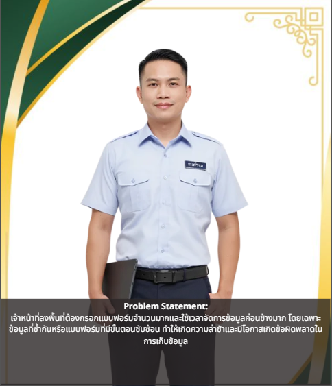
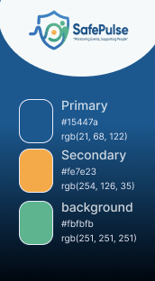

Overview
SafePulse is an emergency alert and incident management system designed to help users monitor, manage, and respond to critical incidents in real time. The system provides centralized information about incidents, affected areas, alert status, and response activities, enabling teams to quickly understand the situation and coordinate appropriate actions. The project focuses on improving situational awareness, reducing information gaps, and supporting faster decision-making during emergency situations.
Design thinking
Empathize
Research explored how emergency responders, medical personnel, and coordinators operate during incidents. The findings revealed that responders under pressure rely heavily on familiar patterns and struggle with systems that require complex navigation or unclear information hierarchies. Coordinators described the difficulty of tracking multiple concurrent incidents across different communication channels. User Personas were developed for field responders, incident commanders, and inter-agency coordinators, each with distinct goals, time pressures, and decision-making contexts. Empathy Maps captured the emotional states and cognitive demands placed on users during emergency response.
.jpg)

Define
Three primary challenges were identified: fragmented incident reporting across unstandard channels, delayed inter-agency coordination due to unclear communication protocols, and manual triage leading to errors in urgency prioritization during concurrent incidents. Problem Statements were developed for field responders and coordinators, and Design Goals focused on creating a system that reduces reporting time, standardizes incident data, and gives coordinators immediate situational awareness. User Journey Maps traced the full incident response lifecycle from detection to resolution.



Ideate
Ideation focused on how to minimize the steps required to report an incident while capturing all necessary information. User Flows mapped the incident reporting process for field responders and the coordination dashboard interaction for incident commanders. The design explored how to surface the most critical information — incident location, type, severity, and available resources — without overwhelming coordinators. A Sitemap structured the platform into a field-facing reporting interface and a coordinator-facing dashboard for real-time monitoring and resource allocation.


Mood and tone
SafePulse's visual direction is urgent, reliable, and focused. The interface uses a high-contrast dark theme with strong color signals for priority and alert states, communicating the seriousness of emergency situations while maintaining clarity under pressure. Every design decision prioritizes speed of comprehension and action over visual complexity.
